t1a14 edge impulse classifacation
I made a classification model on EdgeImpulse.com
I made it classify objects on the camera using my phone.
My job is to make other models.
- Visual Classification - Done
- Wake Word (sound) - Done
- Visual Object Detection FOMO (faster objects more objecs) - Done
Classification
Heres my completed graph
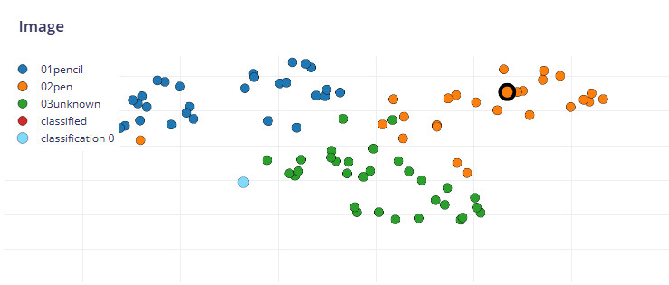
Heres the amount of objects I made the AI detect
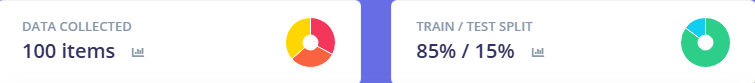
Heres another earlier dataset / graph
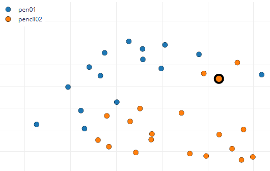
Heres my AI successfully detecting a pen
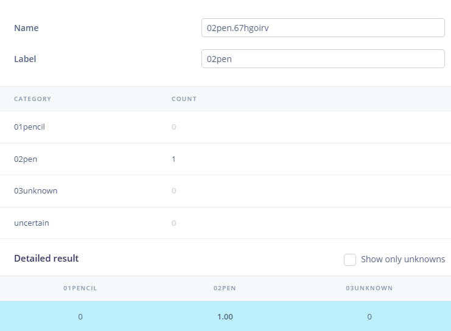
Heres my AI successfully detecting a pencil
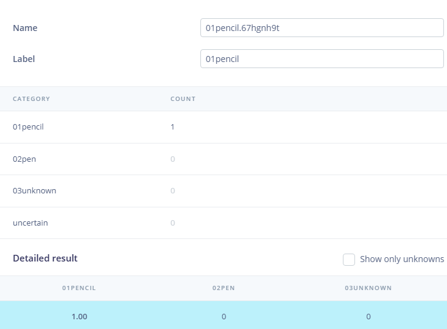
Heres my AI perfectly getting all the objects correct
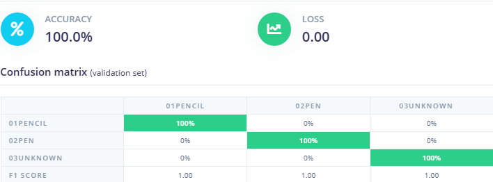
FOMO
This is my Fomo model, I think it could've had a better result if I added more data to test and train on.
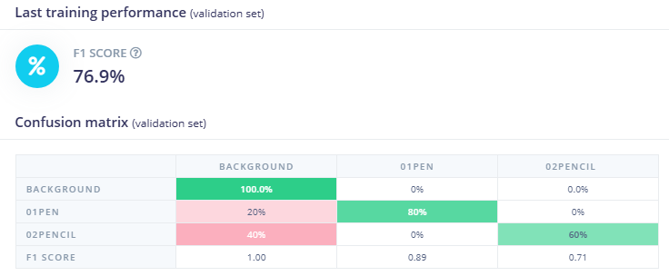
Wake Word
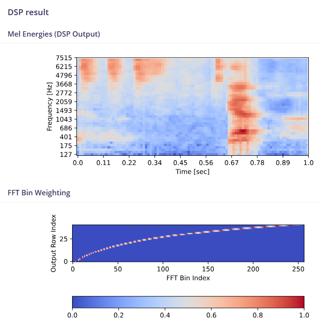
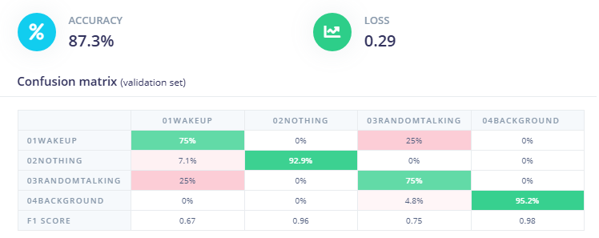

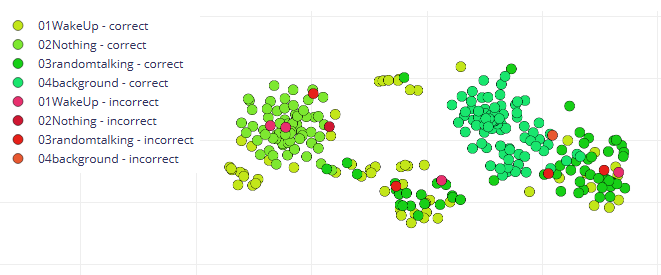
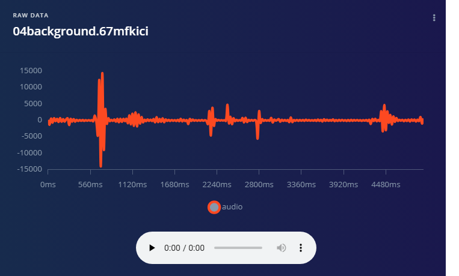